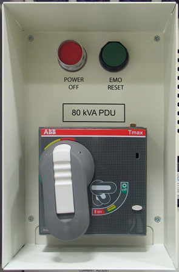

To remove LOTO for the RF amplifier: At the PDU front panel, flip the PDM-RF (or RF+MNS) circuit breaker to the ON (UP) position. Flip the circuit breaker on the bottom of the RF amplifier to the ON position.
To remove LOTO for the PEN cabinet: At the PDU front panel, flip the PDM-RF (or PEN Cabinet) circuit breaker to the ON (UP) position.
| NOTE: | You may need to perform an EMO Reset if the RF amplifier LEDs do not come on. To perform an EMO Reset, press the EMO RESET switch on the PDU. |
Illustration 10: EMO Reset Switch
